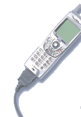
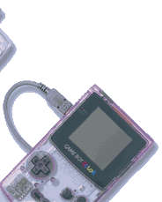

|  |  | ||||||
|
|
|||||||
| Ｎ．Ｏ．Ｍ１月号では、任天堂がお届けする「モバイルシステムＧＢ」の世界を特集します。「モバイルシステムＧＢ」は、任天堂がお届けする新しいエンターテインメントのサービス。ゲームの世界がより楽しめるのはもちろんのこと、メールやホームページなども利用することができます。それも、みんながいま持っている携帯電話やＰＨＳを使って、気軽にエンジョイできるんですよ。 |
| 今回は編集部が総力を結して、「モバイルシステムＧＢ」の魅力を取材してきました。2001年１月27日に、いよいよ開始される「モバイルシステムＧＢ」のサービス。みなさんもぜひ、体験してみてください。 |